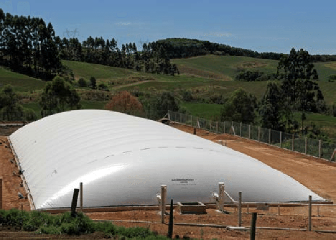
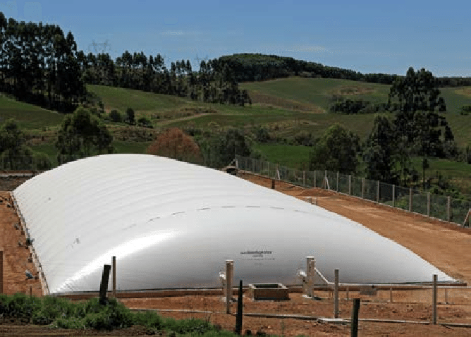

Impacto y alcance de la Porcinaza
-
Contaminación de fuentes y recursos hídricos por mal manejo de residuos orgánicos.
-
Inexistencia de biodigestores en las granjas.
-
Desperdicio de recursos orgánicos aprovechables (Gas, Abono y Energía).
-
Emisiones de gases de efecto invernadero.
 
